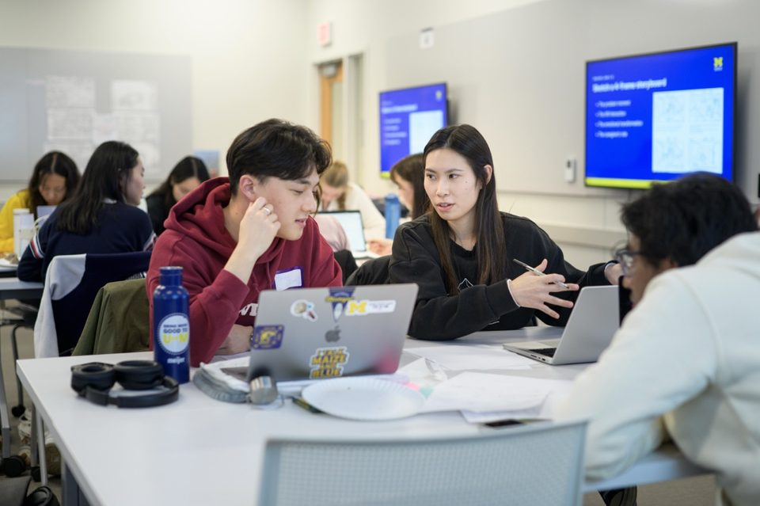

The Value of Navigating Friction & Active Execution
When you view friction not as a barrier, but as a natural part of the applied learning process, you develop the strategic problem-solving skills needed in modern information careers. These are the exact experiences that distinguish top UMSI graduates.
In engaged learning, projects do not unfold neatly. Clients, stakeholders, and communities bring ambiguity, competing priorities, and shifting constraints. The goal is not to eliminate every challenge, but to learn how to respond thoughtfully, adapt with purpose, and keep the project moving in a way that remains ethical and useful.

Managing & Executing in the Field
Conducting research, tracking progress, and maintaining clear communication with project sponsors are essential during the active project period. This phase is where your preparation becomes visible in your work.
Focus & Objectives
- Fieldwork & Research Methods: Apply human-centered design tools to observe contexts and extract insights.
- Sponsor & Client Updates: Maintain transparency with regular progress reporting.
- Feedback Loops: Gather, evaluate, and integrate constructive feedback mid-project.
Featured Resources & Handouts
- HFLI - AEIOU Worksheet: Framework to categorize field observations into Activities, Environments, Interactions, Objects, and Users.
- HFLI User-Needs-Insights Worksheet: Translates raw interview and observation data into actionable design insights.
- HFLI Feedback Worksheet: Structures mid-point feedback cycles between students, instructors, and partners.
- Ginsberg Center - Community Engagement Cases Handout: Practical scenarios illustrating ethical dilemmas and resolution strategies.
- Sponsor Dashboard Template - Organizational Excellence: High-level status dashboard to keep external clients informed on project health.
- Student Project Communications Plan Example & Template: Establishes meeting cadences, channels, and response windows for teams.
- Project Management Worksheet: Hands-on tool for breaking down project goals into milestones and task assignments.
Communication & Workflow Tracking
Strong communication keeps your project grounded and accountable. Teams should maintain a clear rhythm of updates, decision logs, and milestone check-ins to ensure all stakeholders understand what is happening, what is changing, and what still needs to happen.
When you manage the project with transparency and structure, you make it easier to respond to feedback, adjust priorities, and keep the work aligned with project goals.
Wrap Up, Reflect, and Move Forward
Close your project responsibly so your partner can use the work after the semester ends. Reflect on your growth and document what you contributed.